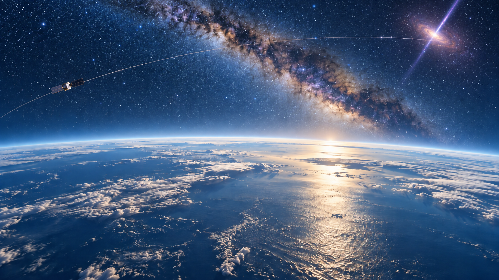

A path through physics, astrophysics and scientific data processing.
I am originally from Lebanon and earned my master's degree in General Physics from Beirut University. In late 2012, I was awarded a scholarship of excellence from Joseph Fourier University in Grenoble. After graduating in physics and mathematics from Marseille University in 2014, I pursued a doctorate in High Energy Astrophysics at the University of Montpellier and the Laboratoire Univers et Particules de Montpellier (LUPM).
Working with the international Fermi collaboration, I focused on theoretical modelling and comparisons with observations of gamma-ray bursts (GRBs). I defended my PhD thesis in September 2017 and then moved to Trieste, Italy, for my first postdoctoral research position at the Istituto Nazionale di Fisica Nucleare (INFN).

In Trieste, I contributed to the Fermi and CTA Science collaborations, focusing on GRB spectral analysis with Fermi and simulating GRB spectra using the Cherenkov Telescope Array (CTA). During my four years of research experience within the Fermi team, I also supported the LAT GRB group through the Burst Advocate monitoring service, contributing to the real-time detection of several GRBs.
After a year, I returned to Marseille, France, joined the LSST Dark Energy Science Collaboration (LSST DESC), and worked at the CPPM on validation of the supernova-detection pipeline.
In 2021, I relocated to Toulouse to join the Institut de Recherche en Astrophysique et Planétologie (IRAP) for my third postdoctoral position. My work focused on validating and assessing the performance of the 6,400 detectors of the ECLAIRs instrument for the SVOM space mission. During this postdoc, I also organized the GAHEC weekly seminars, inviting speakers from IRAP teams and external institutes to present work mainly, though not exclusively, in high-energy astrophysics.
In 2023, I opened a new chapter by joining the SWOT (NASA/CNES) and S3NG (ESA/CNES) teams. This work focused on ocean surface water and topography. I studied ocean topography with SWOT and contributed to development of the onboard processing chain for the SAOOH altimeter of Sentinel-3 Next Generation (S3NG).